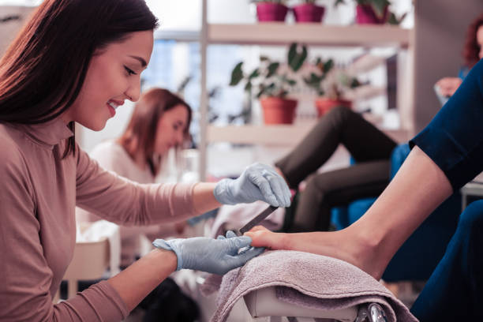
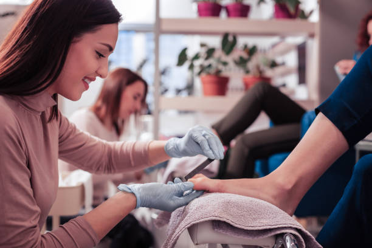
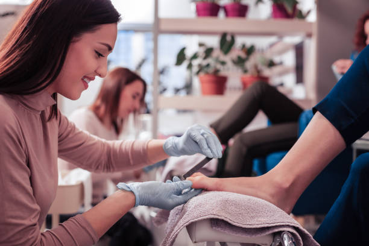
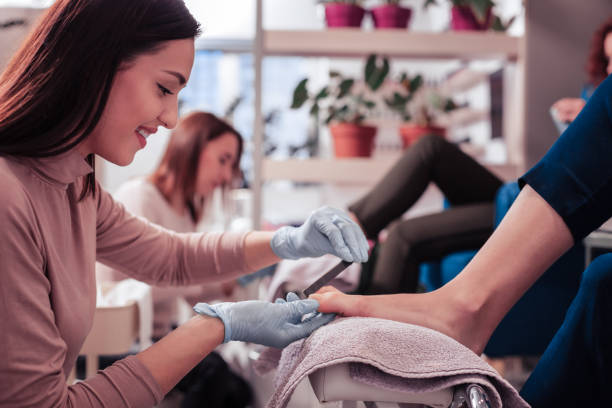

Permite mantener cuidadas las manos y uñas, y mejorar el aspecto general de cada persona.
Además de tener una función protectora, las uñas son el espejo de nuestro estado de salud en general,
cuidado personal y de nuestro carácter.
Una manicura desprolija denota desidia y provoca rechazo.
Importante recordar que las uñas son como la tarjeta de presentación de las manos y por este motivo debemos cuidarlas.
Las manos revelan rasgos tan característicos como tu personalidad y tu salud, por ello es importante mantenerlas en perfecto estado, o el mejor posible, y por supuesto muy hidratadas.
Tener las manos saludables es sinónimo de una persona preocupada y atenta por su imagen y salud y qué mejor manera de conseguirlo que realizando una manicura.
Una regla básica para un buen tratamiento de manicura necesariamente implica retirar la suciedad de las uñas y dejar la piel libre de impurezas o células muertas para luego hidratarlas y conseguir unas manos muy suaves y tersas.
Hay muchos tipos de manicura que se adaptan a cada tipo de uñas, por ello, es importante optar por el tratamiento más conveniente, según el caso particular, para conseguir tener unas manos perfectas.
Los pies, como hemos dicho al principio del artículo, soportan todo nuestro peso cada día y por ello es fundamental mimarlos y cuidarlos para que no nos pasen factura a largo plazo.
Una buena pedicura te ayudará a mantener limpios tus pies y a cuidarlos para que las uñas no se encarnen y dañen la piel. Si eres aplicada y sigues al pie de letra el tratamiento adecuado.
También conseguirás eliminar cualquier tipo de callos o durezas que tengas en los pies y mantenerlos libre de infecciones, pues si no los cuidamos los hongos pueden encontrar en tus pies un buen hogar.
Siempre recuerda que es imprescindible mantener la zona bien hidratada realizando un masaje revitalizante para reactivar la circulación de los pies.